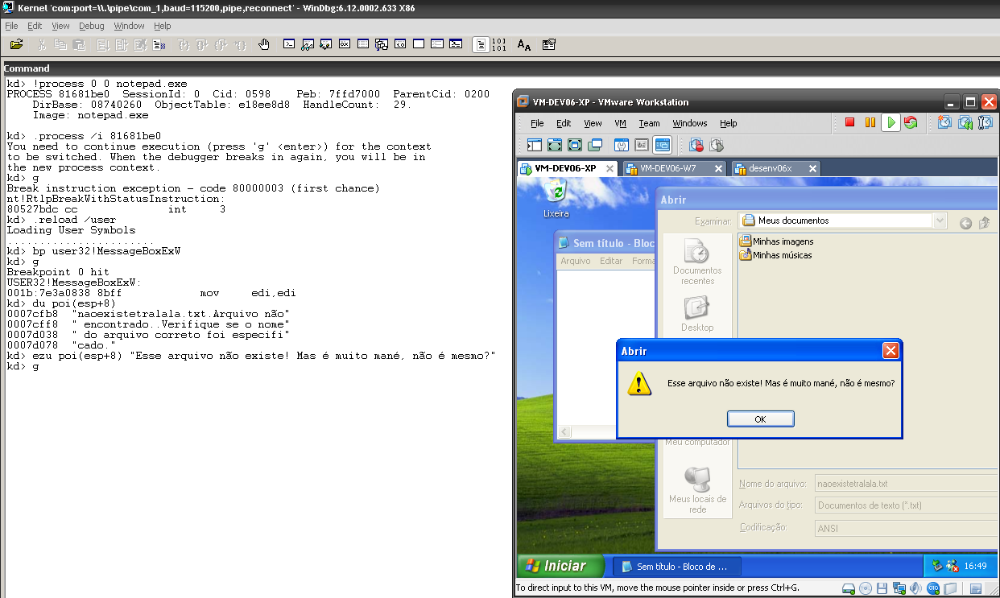

# 15 Anos e Meio
Caloni, 2010-07-07 <cinema <movies [up] [copy]Essa é daquelas comédias francesas que esperam arrancar risadas criando expectativas em cenas isoladas. Contudo, se sai razoavelmente bem ao juntar toda sua história através do pai, que precisa aprender a respeitar as liberdades que sua filha recém-adolescente "adquiriu" aos 15 anos de idade. Algumas ideias como o Einstein como conselheiro poderiam ser deixadas de fora, pois não são orgânicas nem engraçadas o suficiente para justificar suas aparições no decorrer da narrativa.
Por outro lado, a química pai-filha de Daniel Auteuil (Caché) e Juliette Lamboley funciona praticamente todas as vezes que os vemos juntos em cena. Auteuil, desnecessário dizer, se sai tão bem em um drama de Haneke quanto em uma comédia adolescente de François Desagnat e Thomas Sorriaux (que não fizeram mais nenhum longa desde então).
Enfim, um filme sessão da tarde que diverte moderadamente e faz o tempo passar. Mas nada mais que isso.
# Breakpoints promíscuos
Caloni, 2010-07-26 [up] [copy]Ontem falei sobre como "brincar" com os breakpoints promíscuos, ou seja, aqueles que topam qualquer processo. Isso é muito simples de se fazer:
- Configure uma VM para bootar em kernel debug.
- Encontre um processo qualquer (vamos usar o notepad pra variar?).
- Reabra os símbolos de user mode nele.
- Defina um breakpoint em alguma DLL de user mode.
Como meus leitores são muito espertos vou partir para o momento após rodarmos um notepad.exe:
kd> !process 0 0 notepad.exe
PROCESS 81681be0 SessionId: 0 Cid: 0598 Peb: 7ffd7000 ParentCid: 0200
DirBase: 08740260 ObjectTable: e18ee8d8 HandleCount: 29.
Image: notepad.exe
kd> .process /i 81681be0
You need to continue execution (press 'g' <enter>) for the context
to be switched. When the debugger breaks in again, you will be in
the new process context.
kd> g
Break instruction exception - code 80000003 (first chance)
nt!RtlpBreakWithStatusInstruction:
80527bdc cc int 3
kd> .reload /user
Loading User Symbols
.......................
kd> bp user32!MessageBoxExW
kd> g
Breakpoint 0 hit
USER32!MessageBoxExW:
001b:7e3a0838 8bff mov edi,edi
kd> du poi(esp+8)
0007cfb8 "naoexistetralala.txt.Arquivo não"
0007cff8 " encontrado..Verifique se o nome"
0007d038 " do arquivo correto foi especifi"
0007d078 "cado."
kd> ezu poi(esp+8) "Esse arquivo não existe! Mas é muito mané, não é mesmo?"
kd> g
O screenshot diz tudo:
Agora a parte mais divertida: experimente com outro notepad, ou com o explorer =)
# Sétimo Encontro de Programadores C++
Caloni, 2010-07-26 [up] [copy]Mais um fim-de-semana no ócio e na vadiagem. Tenho que manter minhas qualidades de bom programador que sou: preguiçoso, impaciente e pretensioso.
Mas nem por isso deixei de terminar uma primeira versão do aplicativo que irei usar como base na minha palestra do nosso próximo encontro C++: Crash Dump Analysis. Se alguém tiver dicas de quais os problemas mais difíceis do Universo para analisar em um dump de memória, comente a respeito e veremos o que dá pra fazer.

Enquanto isso, continuo descobrindo maravilhas do WinDbg. Essa semana fiquei brincando de colocar breakpoint em user-mode, mas depurando o kernel, como fizeram os rapazes do Ntdebugging. A conclusão é que ele vale para todos os aplicativos abertos. Tente com o MessageBox!
!process 0 0 notepad.exe .reload /user bp user32!MessageBoxW
Mas devaneio. Talvez outra boa qualidade de um bom programador.
[2010-06] [2010-08]